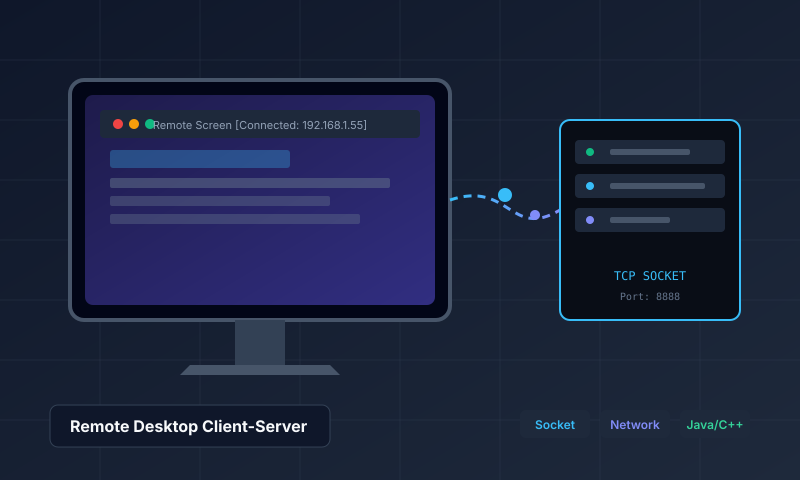

TICKET #01 // MÔN LẬP TRÌNH MẠNG
SOCKET TCP/IP

Remote Desktop Application
Phần mềm điều khiển máy tính từ xa mô hình Client-Server qua giao thức Socket TCP/IP; truyền nhận liên tục luồng byte stream ảnh chụp màn hình, đồng bộ sự kiện chuột và bàn phím thời gian thực.